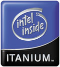
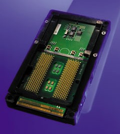
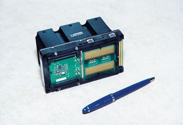
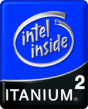
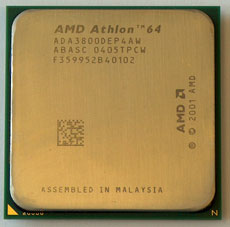
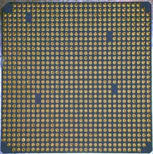
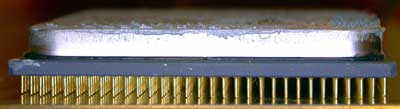

На компьютерном рынке сейчас существует практически два крупных производителя процессоров. Если задать любому из вас вопрос "Какой процессор лучше купить?", то за ним последует множество ответов, но, по сути, преобладать будут два варианта: Intel и AMD. Обе эти корпорации не останавливаясь ни на секунду выпускают все более производительные процессоры. При этом идет не простое наращение частоты ядра, а переработка всей архитектуры и блоков процессора. Новый этап эволюции процессоров обе компании видят в направлении увеличения разрядности процессора и использовании на одном кристалле нескольких "независимых" ядер (это уже другая история), которые будут функционировать параллельно. Преимущества микропроцессоров с большей разрядностью очевидны. Они позволяют адресовать больший объем памяти, дают возможность оперировать с большим диапазоном чисел, повышают эффективность параллельных и матричных вычислений и т.д. Начнем рассмотрение с ветерана процессостроения корпорации Intel и его продукта процессора Itanium.

"Раскрутка" процессора Itanium датируется ноябрем 1997 года. Однако хотелось бы напомнить, что история Itanium началась значительно раньше.К 1994 г. корпорация Intel испытывала определенные трудности. Продолжавшаяся два года разработка 64-разрядной архитектуры Р7 натолкнулась на серьезные трудности. Впоследствии Intel отказалась от Р7 в пользу EPIC (Explicitly Parallel Instruction Computing - детище Нewlett-Packard, 64-разрядная архитектура). В июне 1994 г. компании Intel и Hewlett-Packard подписали соглашение о совместной разработке новой 64-разрядной архитектуры, ориентированной на применение в серверах и рабочих станциях. Новый процессор получил название Merced в честь реки в Калифорнии (первоначально предполагалось, что системы Merced появятся в 1997 или 1998 г.).
Два года спустя, когда выяснилось, что мощности Merced недостаточно, чтобы при использовании HP-UX (64-разрядная система UNIX) обойти архитектуру PA-RISC, в Нewlett-Рackard решили самостоятельно создавать новый процессор на том же фундаменте, что и Merced, но с иной реализацией внутренних функциональных блоков. Обе компании расширили свое сотрудничество уже над новым 64-разрядным процессором McKinley (так называется высочайшая гора в Северной Америке).
В 1997 г. Intel и Hewlett-Packard представили архитектуру и набор команд IA-64 (Intel Architecture).
В августе 1999 г. впервые появились опытные образцы процессора, а осенью Intel представила Itanium как коммерческое наименование своего первого 64-разрядного процессора.

Первые образцы 64-разрядного процессора Intel представляют собой картридж размером примерно 10х6 см, который включает в себя L3 (кэш-память третьего уровня) 2 либо 4 Мбайт и радиатор. Картридж монтируется в разъем типа Slot и имеет 418 выводов. Процессор имеет трехуровневую иерархию сверхоперативной памяти. Если L1 и L2 интегрирована на кристалле процессора, то микросхемы L3 расположены на самой плате картриджа. На реализацию процессора с соблюдением проектных норм 0,18 мкм потребовалось около 320 млн. транзисторов, из которых только 25 млн. пришлось на реализацию самого ядра, а остальные - на кэш-память. Блок вычислений с плавающей запятой, занимает около 10% площади кристалла. Производительность Itanium составляет до 6,4 млрд. операций с плавающей запятой в секунду. Благодаря архитектуре EPIC и 15 исполнительным устройствам процессор может выполнять до 20 операций одновременно. 266-МГц шина данных позволяет осуществлять быстрые транзакции со скоростью 2,1 ГБит/с, при этом он может непосредственно адресовать до 16 Тбайт памяти. Процессоры Itanium будут работать на тактовой частоте 800 или 733 МГц.
Архитектура Itanium включает такие уникальные средства повышения надежности, как усовершенствованная система обнаружения, исправления и локализации ошибок, предоставляемая архитектурой машинной проверки (MCA), ведение подробного журнала ошибок и код коррекции ошибок (ECC) на кэш-памяти всех уровней и системной шине. Масштабируемость до 512 процессоров.
Для двух- и четырехпроцессорных систем Intel выпустила специальный набор микросхем Intel 460GX, которые могут включаться каскадно, увеличивая число одновременно используемых процессоров. Поскольку конфигурация таких систем изначально предусматривает объемы оперативной памяти в несколько гигабайт, то в системах Itanium применяются сравнительно недорогие микросхемы памяти типа SDRAM. При этом для увеличения производительности, по словам представителей Intel, используются такие методы, как буферирование, чередование и деление памяти на несколько банков. Набор микросхем реально поддерживает работу с 64 Гбайт памяти при максимальной пропускной способности 4,2 Гбайт/с, хотя 64-разрядная адресация памяти теоретически позволяет обращаться к гораздо большему количеству адресов.

Современные тенденции развития микропроцессоров связаны с выполнением большего числа команд за один такт. Разработчики IA-64 полагают, что добиваться более высокого уровня суперскалярности (распараллеливания) в процессоре можно, только если отказаться от обычных последовательных кодов и ввести параллелизм прямо на уровень системы команд. В этом случае задача распараллеливания ложится не на аппаратуру процессора, а на компилятор. Как уже отмечалось, в основе IA-64 лежит технология EPIC, главная идея которой - введение явного параллелизма. С выходом Itanium сравнение процессоров по частоте практически теряет смысл. Теперь придется применять новые методики, учитывающие не только количество реально выполненных за один такт инструкций, но и качество анализа компилятором исполняемой программы, поскольку результирующая производительность будет сильно зависеть от этого (процессор ведь может работать с огромной скоростью, вычисляя ненужные ветви программы).
По заявлению разработчиков, Itanium полностью совместим с современными 32-разрядными приложениями. Однако вряд ли эти программы будут работать на 64-разрядном кристалле быстрее. Более того, как полагают некоторые специалисты, возможно, придется привыкать и к более медленным темпам.

Процессор Intel Itanium 2 (с ядром Madison) с объемом L3 6 МБ оптимизирован для выполнения требовательных корпоративных и научно-технических приложений.Выпускается в 3-х модификациях:
Инструкции, обрабатываемые шестью параллельными конвейерами глубиной 8 команд, непосредственно выполняются в 23 функциональных блоках.
Исполняющие модули Intel Itanium 2: 6 целочисленных модулей; 2 модуля для вычислений с плавающей точкой; 2 модуля для вычислений с плавающей точкой двойной точности; 6 модулей для обработки мультимедийных команд; 4 модуля, управляющих загрузкой и выгрузкой данных; 3 модуля ветвлений.
Количество соответствующих модулей оптимально подобрано с учетом потребности в вычислительных ресурсах приложений, характерных для корпоративных СУБД, сложных инженерных расчетов и др. При этом команды практически не "задерживаются" в ожидании, пока освободится нужный исполняющий модуль. Ширина системной шины, по которой осуществляется взаимодействие нескольких процессоров друг с другом и доступ к памяти, увеличена до 128 бит, что также кардинально сказывается на скорости работы.
Число регистров, в которых размещаются данные для непосредственной обработки их процессором, свыше трехсот. Большое их количество позволяет избежать дефицита регистров при параллельной обработке многих команд. Кроме того, в процессоре Intel Itanium 2 реализованы такие механизмы повышения эффективности работы, как стек и переименование регистров.
Регистры Intel Itanium 2: 128 регистров общего назначения; 128 регистров с плавающей запятой; 64 регистра предикатов; 8 регистров перехода.
Объем кэш-памяти третьего уровня процессора Intel Itanium 2 достигает 6 Мб (доступ к кэшу в несколько раз быстрее, чем к "медленной" оперативной памяти, и составляет 48 Гб/с). Архитектура Itanium включает такие уникальные средства повышения надежности, как система расширенного самоконтроля EMCA, обеспечивающая обнаружение, коррекцию и протоколирование ошибок, а также поддержку обработки кода ECC - контроля четности.
Характеристики процессора Intel Itanium 2:
 
Весь поток процессоров Hammer "разбит" на два русла: Clawhammer (для настольных ПК и ноутбуков, Athlon64) и Sledgehammer (серверные процессоры рассчитанные на работу в конфигурациях от 2х до 8ми процессоров, Opteron). Процессоры Hammer производятся по технологии 0.13 микрон с медными межсоединениями и с использованием технологии SOI с дальнейшим переходом на технологию 0.09 микрон. Ядра процессоров Hammer закрыты металлическими пластинами, которые выполняют еще одну функцию - равномерно распределяют выделяемое тепло.

Если сравнивать новый процессор от AMD с поколением К7, то тут сразу бросаются в глаза основные отличия:
Ниже представлены некоторые процессоры нового поколения и их технические характеристики.
Интересно отметить, что рейтинг, хотя и служит оценкой производительности, в то же время не дает однозначной информации о параметрах процессора. Например Athlon 64 3400+ есть в варианте 2,2 ГГц/1 МБ L2 и в варианте 2,4 ГГц/0,5 МБ L2. Аналогично и с 3200+ и 3000+. К счастью, цифра, которая показывает объем кэша L2, легко может быть найдена в маркировке. Еще большую путаницу вносит то, что бывают не только разные модели, имеющие одинаковый рейтинг, но и наоборот - по существу одинаковые процессоры могут иметь разные имена. Например, Athlon 64 FX-51 и Opteron 148, Athlon 64 FX-53 и Athlon 64 4000+.
Что бы не говорили, но корпорация Intel была (и является :-) ) законодателем "процессорной моды", теперь у нее появился серьезный конкурент, который не будет идти по пятам лидера. Сравнивать рассмотренные выше процессоры мы не будем, каждый вправе делать свой выбор самостоятельно. Какая архитектура выживет - покажет время.
{kind=link}
{kind=link}
{kind=link}
{kind=link}
{kind=link}